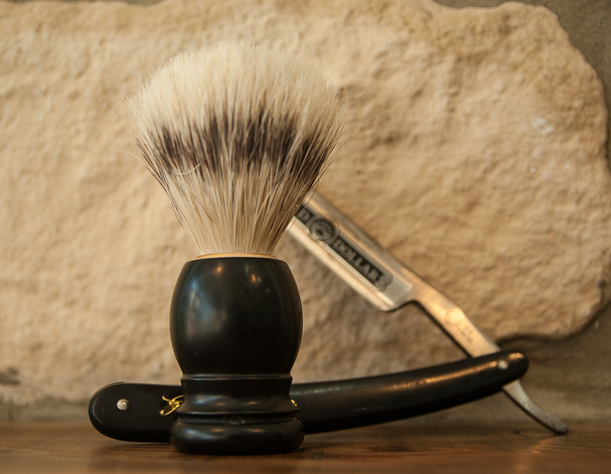

Barber Shop
A family owned and operated barber shop servicing the Wichita Falls, Tx area. 5 O'clock Male Grooming provides you with an old-school style feel and cut but is infused with modern techniques and services. Come crack open a cold one while you are getting yourself pampered. It's 5 O'clock somewhere.

Services
From haircuts, to faical waxes and everything inbetween, come see how we can take care of your grooming needs.

Book Your Appointment
If you are liking what you are seeing or your a returning customer book your appointment online.